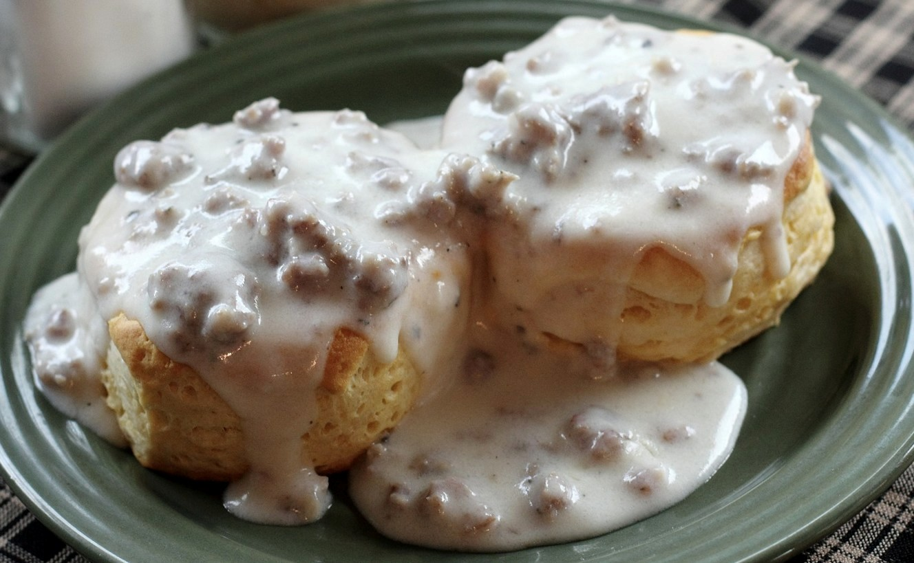

Biscuits and Gravy

Description
A simple recipe of sausage gravy over biscuits.
Ingredients
- 1 can of biscuits
- 1 lb. breakfast sausage
- 1/4 c. all-purpose flour
- 2 c. milk
- Salt
- Pepper
Steps
- Preheat oven and bake biscuits
- Crumble and cook sausage in large skillet over medium heat
- Stir in flour until dissolved
- Gradually add milk
- Continue to heat until gravy thickens, adding more milk as necessary
- Salt and pepper to taste
- Serve over hot biscuits
Back To Home Page